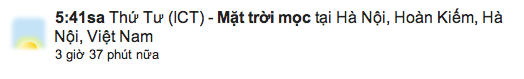

12.31.12
Posted in books, personal at 11:54 am by danvk
A few personal highlights from 2012:
I traveled all over the place this year. Some highlights:
I took a three-month sabbatical from work during May, June and July. Some highlights from that:
I also spent a lot of time working on personal projects this year. A few highlights:
Books I read in 2012:
And a few other miscellaneous things:
Permalink
09.11.12
Posted in personal at 5:22 pm by danvk
 While looking through some old journals last night, I found my entry from 9/11/2001. There are some bits that I remember (my French teacher deciding to finish class and not tell us, hearing about what had happened by my locker) and many that I had forgotten (all the misinformation—“10,000 dead”—and the standardized test which prevented any school-wide announcements).
While looking through some old journals last night, I found my entry from 9/11/2001. There are some bits that I remember (my French teacher deciding to finish class and not tell us, hearing about what had happened by my locker) and many that I had forgotten (all the misinformation—“10,000 dead”—and the standardized test which prevented any school-wide announcements).
Here it is:
Wow, what a crazy day. Mrs. Miller came into our French class around 8:40 and told Mrs. Sullivan what happened. Mrs. Sullivan didn’t say anything and just went on with class, which I find mind-boggling. Then in the hall I saw a bunch of people, including Jen Keber around Eileen’s locker telling her something, so I knew something had happened. I asked what, and Colin Walsh said “They blew up both World Trade Towers and the Pentagon”. I thought he was joking, but boy was I surprised. We listened some on the radio in Mr. Gerencher’s room, then went to the cafeteria for a few periods, and watched various stations for the rest of the day in all our classes. There was some confusion at the start because the sophomores were taking ISTEPs and Mrs. Ratliff didn’t want them to know. Then when they were done she came on the PA and said what had happened. Then we had a mass after school led by Fr. Bly and I had tennis as usual.
It still seems like something that couldn’t really happen. Everyone kept saying that the images we were seeing looked like they were straight out of a movie, and they’re right. The whole of New York City was completely covered in a giant smoke-cloud. The most amazing thing though was the videos that actually showed the second plane curving in and hitting the South Tower. I think my mom found it the most troubling that they sent in rescue teams, and then the towers collapsed, killing about half of New York’s fire fighters (about 200 dead they think now). Right now they’re saying that about 10,000 are presumed dead from the tower, 266 from the planes, and a few dozen from the pentagon. At one point Brother Robert said that they had bombed the supreme court too, but that turned out to be wrong. It really did strike me though, since it seems like buildings like that have been there forever—they’re really icons of our civilization. I suppose something like the Pentagon or the World Trade Towers are too, but those were built in the last fifty years or so. Tina said that Nate’s roommate’s girlfriend was flying from Boston to LA today, so she was pretty shaken by the whole thing. Apparently it’s the first time in history that they’ve closed down all American flights. It was quite a moment when we knew what had happened and tons of reports, both true and false were coming in from everywhere. Apparently, the White House, the Supreme Court, the USA Today building, the Defense Department and a bunch of other places were suppposedly bombed, but none of those actually happened. It really must be hard to sort truth from rumor in those sorts of cases.
They’ve had continuous coverage for almost 15 hours now, and I don’t see it stopping. We missed Bush’s speech to go to the Prayer Service at Church, and I think I’ll keep the bulletin—it’s an interesting piece of history. I guess today is a pretty significant piece of history too. It’s just absolutely insane.
Permalink
07.01.12
Posted in personal at 7:00 am by danvk
My friend April recently introduced me to OhLife, a dead-simple daily journaling service. You get an email each day with a previous journal entry. At first it’s yesterday’s entry, then last week’s, last month’s and last year’s. You respond to the email with today’s journal entry.
The thing I really love about this is how it subtly encourages good journaling habits. It took many years of journal-writing for me to learn these two important truths:
- Whenever you write, you should have a reader in mind. For a journal, the reader is your future self. Future You is the only person who will ever care to read this.
- The only way to become a better journaler is to read your old journals. Put another way: you won’t write boring entries for months on end if you’re forced to read them!
By sending you a past journal entry with each prompt, OhLife nails both of these.
Another journaling trap is to make each entry a list of the things you did today. This will be quite dull for your future self to read. What’s more interesting is the internal stuff: what are you looking forward to? how do you feel about other people and events? You’re likely to forget how you felt in the past as new information comes in.
How could OhLife discourage thing-listing? Perhaps by including content from Timehop. If your year-ago journal entry automatically included all your Foursquare check-ins and your texts, you’d be less tempted to list them out in today’s journal entry.
If journaling is your cup of tea, I would highly recommend OhLife!
Permalink
05.21.12
Posted in personal at 2:45 pm by danvk
I recently found a disk image I made from an old, circa 1997 hard drive. Back then we used ClarisWorks for all of our word processing needs. I quickly ran into my own version of the Digital Dark Age: how to read these ancient files? I spent enough time figuring this out that I owe it to the web to write up the process.
Read the rest of this entry »
Permalink
04.10.12
Posted in personal at 12:14 pm by danvk
Nearly two years ago, I wrote about launching the Sunrise/Sunset Onebox, which tells you when the sun will rise or set in any location.
You trigger it in English by search for [sunset nyc] or even just [sunset] to get times for your current location.
Over the weekend, I launched the onebox in 30+ new languages. It’s pretty cool to see your work in a language that you don’t understand. Here are a few examples:
Arabic: [غروب الشمس في المدينة المنورة] = [sunset in medina]
Or in Vietnamese: [mặt trời mọc Hà Nội] = [sunrise in Hanoi]

Or in French: [coucher de soleil paris] = [sunset paris]
The translated onebox is proving particularly popular in Arabic-speaking countries, where the sunrise is important for prayer times. It will be interesting to see whether there’s a spike in Hebrew queries on Friday, when Israel observes the sabbath beginning at sundown.
This launch has been more of a slog than I ever would have expected, so it’s gratifying to see it out there in the wild, being used. The world’s languages are a baffling mix of left-to-right and right-to-left. Arabic gets a special shout-out here for its plural forms. It has different word endings for quantities of 1, 2-10 and 11+!
Permalink
« Previous entries
Next Page »